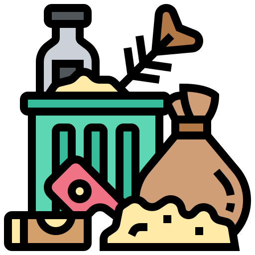
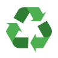

Nos Services

Collecte
Nous organisons une collecte efficace des déchets plastiques provenant de diverses sources, y compris les ménages, les entreprises et les espaces publics.

Traitement
Nos installations de pointe trient, nettoient et traitent les déchets plastiques en utilisant des technologies avancées.

Recyclage
Nous transformons le plastique traité en matériaux recyclés de haute qualité, prêts à être réutilisés dans la fabrication.

Création de Produits
Nous concevons et fabriquons des produits innovants en utilisant nos matériaux recyclés, promouvant ainsi une économie circulaire.